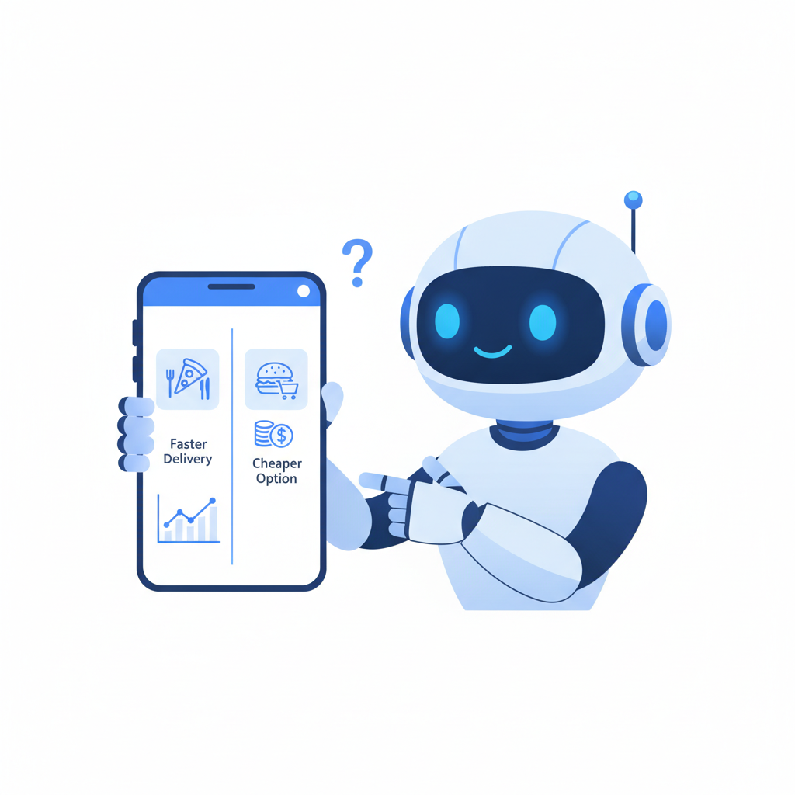
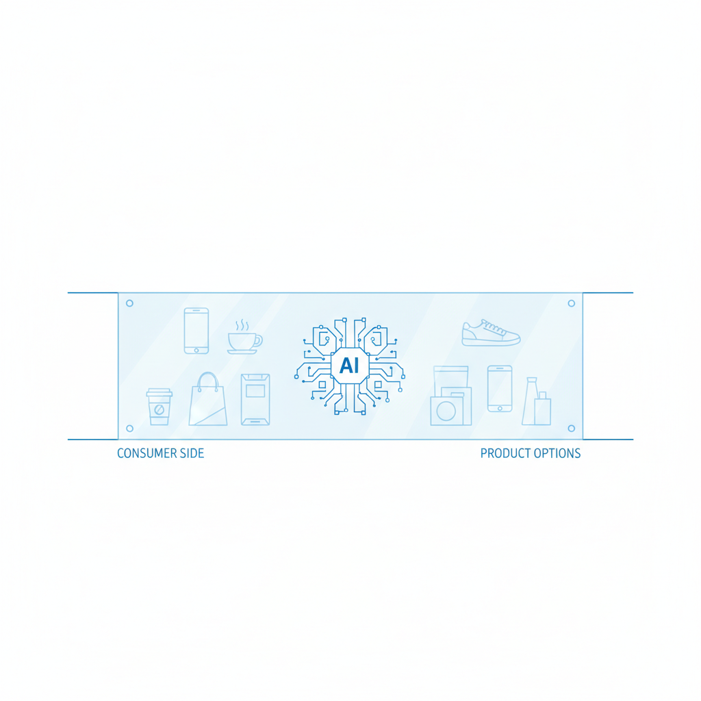
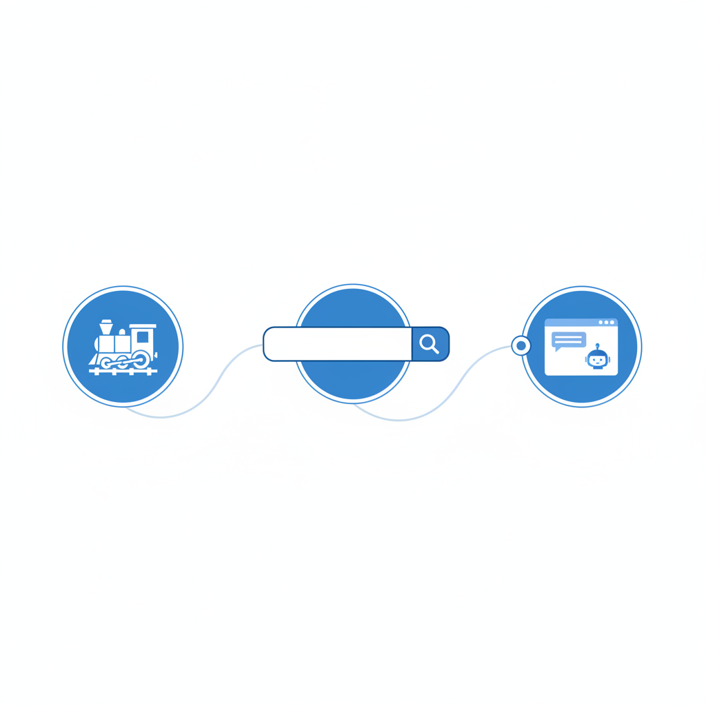

上个月有条新闻没什么人注意：Google和Shopify在全美零售联盟大会上联合发布了"通用商务协议"（Universal Commerce Protocol）。Walmart、Target、Etsy等二十多家零售巨头签字背书。
这条协议的意思很简单：让AI代理能直接替你在任何一家店里完成从发现、比较到付款的全过程——你不需要打开任何网站，甚至不需要知道这笔交易发生了。
这听起来是个关于效率的故事。但我想讲一个关于权力的故事。

一、一份外卖背后的经济学
支付巨头Adyen今年初发布了一份报告，调查了两千名美国消费者。结论是：51%的人愿意让AI全权处理购物决策，包括最终付款。AI购物助手的使用率在一年内从12%跳到了35%。
这些数字背后是一个简单的事实：大量的日常消费决策正在从人类大脑里搬出去。
想想你一天里做的消费决策。早餐吃什么、打车用哪个平台、午饭点哪家、下午喝什么咖啡、晚上看什么视频。这些决策有一个共同特点：你不太在意。经济学家管这叫"低介入度决策"——你没有强烈偏好，只要"差不多就行"。
但"差不多就行"恰恰是AI代理最擅长接管的领域。你不在意，所以你放手。你放手，所以AI帮你选。AI帮你选，所以——等等，AI按什么标准帮你选的？
2025年Cyber Week期间，AI影响的消费额达到670亿美元。AI聊天机器人导向零售网站的流量同比暴涨670%。到2026年底，美国25-30%的线上购物将有AI代理参与决策。
但你委托AI做决策，你没付AI工资。一个不收你钱的代理人，它的雇主是谁？
二、代理人经济学——一门古老的学问
经济学里有个经典问题叫"委托-代理困境"（principal-agent problem），讲的是：当你雇一个人替你做事，他的利益跟你的利益不一定一致。
最直觉的例子是房产中介。你委托中介卖房子，你希望卖高价，中介希望快成交——因为他的提成相对于总价是微不足道的，多花两个月帮你多卖5万块，对他来说不划算。所以中介的理性选择是催你降价。
这个问题有一条核心定律：谁给代理人发工资，代理人就对谁负责。
你付中介佣金，中介好歹还得顾及你的满意度。但如果中介的收入不是来自你呢？
想想搜索引擎。2000年代初，Google的口号是"整理全世界的信息，让人人可用"。搜索结果是"中立"的。然后广告模式成型：商家为排名付费，Google的收入来自广告主而非搜索者。二十年后，Google搜索结果的前半页几乎被广告和SEO优化内容占满。这不是Google邪恶，是经济结构决定的：谁出钱，搜索引擎就替谁服务。
现在，同样的结构正在AI Agent层复现。
Google和Shopify的"通用商务协议"的本质是什么？它让AI代理能把任何一家店当作"可编程服务"来调用。听起来是消费者的福音。但仔细想想：这个协议是谁开发的？Google和Shopify。谁签约的？零售巨头们。谁不在谈判桌上？消费者。
88%的美国零售商表示愿意"让AI代表消费者购物"，56%将此列为战略重点。这话换个说法：88%的零售商愿意向AI平台付费以获取曝光——因为当消费者不再自己逛店时，Agent平台就成了新的流量入口。
McKinsey估算，Agent商业的全球市场规模到2030年将达3到5万亿美元。这个钱从哪来？不是从天上掉下来的。它是从品牌的利润里抽出来的，以"推荐费""展示费""优先匹配费"的形式，交给Agent平台。
这就是你的"免费AI助手"真正的雇主。
三、比广告更危险的东西
你可能会说：这有什么新鲜的？广告不就是品牌花钱影响你的决策吗？电视广告是这样，搜索广告是这样，社交媒体信息流也是这样。AI Agent不过是又一个广告渠道。
不对。有一个结构性的区别。
广告——无论电视、搜索还是信息流——做的事情是"影响你的决策"。它呈现信息、制造印象、激发欲望。但最终拍板的那个人，还是你。你看到可口可乐的广告，走进超市，仍然可以拿起百事。
AI Agent做的事情是"替代你的决策"。你说"帮我点份午饭"，Agent直接下单了。你没有看到备选项，没有比较过程，没有"还是算了换一家"的窗口期。你把权力让渡出去了。
这不是程度差异，是结构性质变。
Deloitte的调查显示，44%的零售高管预期AI将削弱品牌忠诚度。但这个说法太温和了。问题不是品牌忠诚度"被削弱"——那暗示消费者是主动做出新选择的。真相是：消费者根本没有做选择。Agent替他们做了。
这就是"注意力经济"和"代理经济"的核心分野。
在注意力经济里，你是被争夺的对象——你的注意力是稀缺资源，品牌花钱竞争你的眼球。你至少保有一项权力：你可以忽略。你可以安装广告拦截器，你可以快进贴片广告，你可以划走信息流里的推广。
在代理经济里，你连被争夺的资格都没了。品牌争夺的对象变成了Agent平台，而你甚至不知道这场竞争的存在。你只是在某天发现，你的外卖、你的咖啡、你的机票，都来自同一群"优选商家"。
eMarketer预测，AI平台在2026年将掌控美国电商支出的205.7亿美元——是2025年的近四倍。这笔钱，品牌不会从利润表里凭空变出来。它最终会转嫁给消费者。
四、那堵你看不见的墙
Google做了一件当年被骂了很久的事：在搜索结果里放广告。但Google至少做了一个最低限度的善事：它给广告打上了"Ad"标签。你知道前面几条是广告，后面的才是"自然结果"。你可以选择跳过广告。
AI Agent没有这个标签。
2025年底，Perplexity和PayPal合作推出了"即时购买"功能——你在对话界面里问"推荐一个好用的降噪耳机"，AI给你答案，旁边直接有个购买按钮。你点一下，PayPal付款，完成。
问题是：Perplexity推荐的那个耳机，是因为"它客观上最适合你"，还是因为"那个品牌跟Perplexity有合作"？你不知道。你也没办法知道——因为不存在一个"有机结果"和"付费结果"的分界线。整个对话界面就是一个结果。
对品牌来说，一场新的军备竞赛已经开始。行业里出现了一个新术语：GEO（Generative Engine Optimization，生成式引擎优化）。它指的是：优化你的产品数据和品牌内容，让AI代理能发现、理解并推荐你的产品。
这是SEO（搜索引擎优化）的Agent版本。本质上是同一件事：品牌不再直接说服消费者，而是去说服那个替消费者做决定的系统。
但GEO比SEO更不透明。在SEO时代，你至少知道Google的排名算法大致考虑什么（关键词、外链、页面速度）。在GEO时代，AI模型的推荐机制是一个黑箱。一个大语言模型为什么推荐A不推荐B，连它的开发者都说不清楚。
Adyen的调查显示，45%的消费者希望"了解AI为什么选择了这个产品而不是另一个"。但这个需求目前没有任何技术方案能满足。
你面对的是人类商业史上最不透明的推荐系统——不是因为它存心欺骗你，而是因为它的运作方式从根本上就不具备可解释性。而你，正在把越来越多的消费决策交给它。

五、历史不会重演，但会押韵
19世纪末的美国铁路公司有一项特权：它们决定运价。一个农民想把粮食运到市场，必须接受铁路公司的报价，因为没有替代选项。铁路公司不种粮食、不卖粮食，但它从每一笔粮食交易中抽成。
后来政府出手了。1887年《州际商务法》诞生，理由是：当一个中间环节垄断了交易通道，它就变成了事实上的征税者。
搜索引擎是另一个版本的铁路。Google不生产内容、不卖商品，但它从每一笔线上交易中抽取广告费。2023年，美国司法部以反垄断起诉Google搜索业务。理由几乎是一样的。
现在轮到AI Agent了。
Agent平台不生产商品、不提供服务，但它即将从每一笔由AI促成的交易中收取费用。它是新一代的铁路，新一代的搜索引擎。而且它比前辈们更强大——因为铁路只运货，搜索只展示信息，Agent直接替你做了决定。
IDC预测，到2030年全球将有22亿AI Agent作为"新数字劳动力"运行。它们每年执行的任务数将从2025年的440亿次增长到2030年的415万亿次。这不是科幻。这是三到四年后的事。
回到开头那份外卖。
你的AI帮你选了那家店，不是因为那家店最好吃，不是因为离你最近，不是因为性价比最高。是因为在你看不见的层面，有一套经济激励结构在运转——那家店可能给了平台更高的佣金，可能购买了"优先推荐"，可能在GEO上做了更好的优化。
你的AI代理是免费的，所以它注定不是你的代理。这不是一个技术问题，是一个政治经济学问题。上一次人类遇到类似结构——一个不可见的中间层垄断交易通道——花了三十年才找到应对方案。这一次，我们有多少时间？
我不知道答案。但我知道，如果你下次让AI帮你点外卖，至少可以问它一个问题：
"为什么是这家？"
如果它答不上来——那你就知道了。
